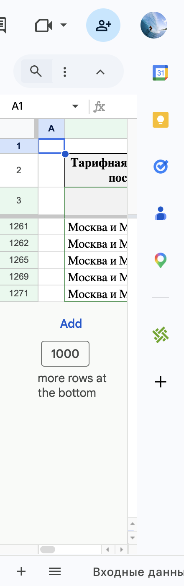

Таблица для Ozon: план поставок и кросс-докинг
Таблица планирования поставок на Ozon — расчёт с учётом кросс-докинга, логистики до покупателя по кластерам и спроса. Таблица для мерчанта Ozon под заказ.
Что было нужно
Мерчанту на Ozon нужна была таблица для Ozon — не ручной пересчёт в Excel, а один инструмент планирования поставок:
- Два варианта отгрузки: кросс-докинг из Гривно по направлениям и размещение на 2–4 основных складах с доставкой до покупателя.
- Реальные тарифы из озоновских таблиц заказчика: логистика по кластерам, тарифы кросс-докинга (отгрузка + перевозка по маршрутам).
- Распределение всего объёма поставки (например 1400 шт.) по кластерам с учётом спроса за 30 дней, остатков на складах и срока до следующей отгрузки.
- Сравнение стоимости: где выгоднее кросс-док, где — прямой склад; наценка за нелокальный заказ учтена.
Без такой таблицы пришлось бы каждый раз сводить вручную тарифы, спрос и остатки по десяткам направлений — долго и с риском ошибок.
Что сделано
Реализована Google-таблица (по согласованию вместо Excel) с автоматическим расчётом и визуализацией.
- Входные данные: литраж, объём поставки, продажи по кластерам за 30 дней, остатки, срок отгрузки в днях, стоимость товара (для наценки). Число складов в сценарии Б — 2, 3 или 4.
- Тарифы: листы логистики и кросс-докинга в стабильном формате; точка отгрузки кросс-дока — Гривно. Тарифы подтягиваются в расчёт автоматически.
- Логика: по каждому кластеру — потребность на период (среднесуточные × срок) и необходимость (потребность минус остатки). Весь объём распределяется пропорционально необходимости. Для этого распределения считаются сценарий А (кросс-док из Гривно) и сценарий Б (2–4 склада по спросу, доставка до покупателя с наценкой за нелокальный заказ).
- Результаты: таблица по кластерам (куда, сколько коробов, источник — кросс-док или прямой), рекомендуемый вариант, суммарная стоимость. Графики: распределение коробов, сравнение двух сценариев. Стоимость за 1 ед. и за объём — видно по каждому кластеру.
Добавлены все нужные кластеры (включая Новосибирск, Оренбург, Красноярск, Омск, Тюмень). Заказ принят.

В чём плюсы
- Один инструмент вместо ручных расчётов — ввёл объём, продажи, остатки, срок и получил план «куда сколько везти» и какой вариант дешевле в сумме и по кластерам.
- Прозрачность — видно стоимость кросс-дока и доставки за 1 ед. и за объём по каждому кластеру; проще решать, например: «в Дальний Восток кросс-док дорого — не отгружаем».
- Реальные тарифы и наценки — используются таблицы заказчика и наценка за нелокальный заказ из ЛК Ozon.
- Гибкость — можно менять число складов (2–4), срок, остатки, объём — таблица пересчитывается. Возможна доработка: подключение API Ozon для автоподтяжки продаж и остатков.
Цитата из переписки
«Мы берём ваши текущие озоновские таблицы с тарифами (логистика по кластерам и кросс-док по пунктам/маршрутам), приводим их к стабильному формату и делаем так, чтобы расчёт автоматически подтягивал нужные тарифы и считал оба сценария отгрузки для каждого кластера. Дальше таблица сама, на основе спроса и общего объёма/коробов, распределяет поставку по кластерам, считает стоимость "прямой" и "кросс-док", сравнивает и выбирает оптимальный вариант (с правилом приоритета прямой при разнице <5%), плюс показывает экономию.»